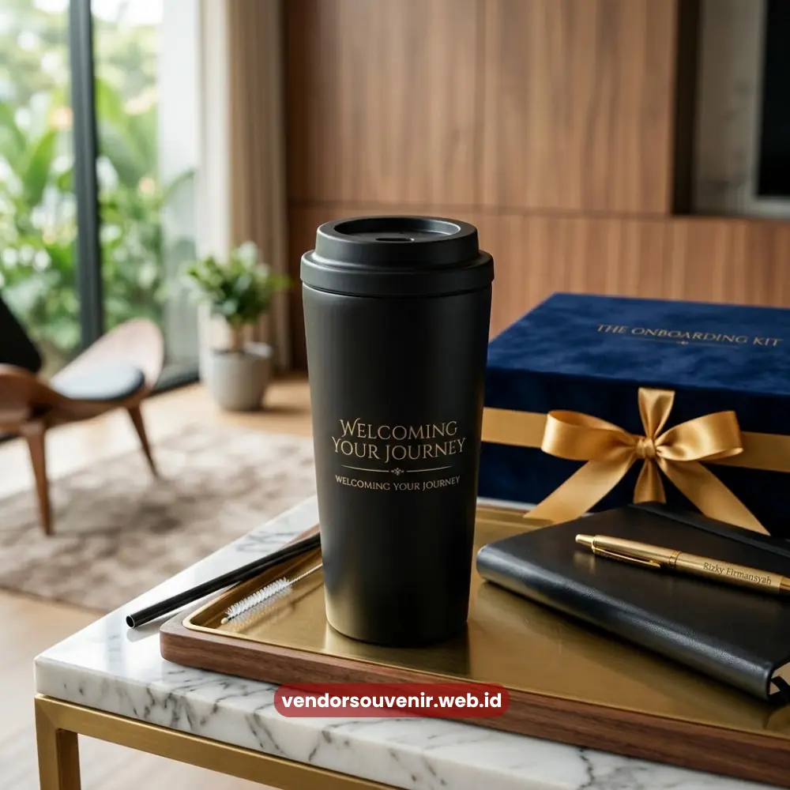

Daftar Isi
Souvenir onboarding karyawan custom logo adalah merchandise onboarding yang dicetak dengan logo dan identitas visual perusahaan.
Hal ini bertujuan agar tampilan perlengkapan terlihat konsisten dengan brand.
Kustomisasi ini dapat diterapkan pada berbagai item seperti tas, tumbler, dan notebook.
Penerapan tersebut menggunakan teknik cetak yang disesuaikan dengan bahan produk.
Vendor Souvenir menyediakan layanan custom logo untuk souvenir onboarding karyawan.
Layanan ini menjamin hasil cetak rapi dan tahan lama.
- Custom logo memperkuat konsistensi identitas visual perusahaan di setiap item onboarding.
- Terdapat beberapa teknik cetak yang dapat disesuaikan dengan jenis bahan produk.
- Proses kustomisasi meliputi desain, proofing, hingga produksi massal.
- Warna dan posisi logo perlu disesuaikan agar tampilan tetap profesional.
- Custom logo berdampak pada persepsi karyawan terhadap kredibilitas perusahaan.
Kenapa Custom Logo Penting untuk Souvenir Onboarding Karyawan?
Custom logo pada souvenir onboarding karyawan berfungsi memperkuat identitas visual perusahaan.
Identitas ini ditekankan sejak momen pertama karyawan baru bergabung.
Ketika logo perusahaan tercetak konsisten pada berbagai item yang digunakan sehari-hari.
Karyawan akan lebih mudah mengenali dan mengingat identitas brand tempatnya bekerja.
Apa Dampaknya terhadap Persepsi Karyawan?
Item dengan cetakan logo yang rapi dan berkualitas cenderung meningkatkan persepsi karyawan.
Terutama terkait profesionalisme dan kredibilitas perusahaan tempat mereka bekerja.
Sebaliknya, hasil cetak yang kurang rapi dapat memberikan kesan yang kurang baik.
Meskipun item yang digunakan sebenarnya berkualitas baik dari sisi bahan.
Teknik Cetak Apa Saja yang Tersedia untuk Souvenir Onboarding?
Terdapat beberapa teknik cetak yang umum digunakan untuk souvenir onboarding karyawan.
Di antaranya meliputi metode sablon, bordir, gravir laser, dan cetak digital.
Pemilihan teknik ini biasanya disesuaikan dengan jenis bahan produk masing-masing.
Serta disesuaikan dengan tingkat detail logo yang ingin ditampilkan.
Bagaimana Memilih Teknik Cetak yang Sesuai?
Bahan kain seperti tas kanvas umumnya lebih cocok menggunakan teknik sablon atau bordir.
Sementara bahan logam seperti tumbler stainless lebih sesuai menggunakan teknik gravir laser atau cetak UV.
Kesesuaian teknik cetak dengan bahan produk ini sangatlah penting.
Karena hal itu akan sangat mempengaruhi daya tahan logo dalam jangka panjang.

Penerapan Custom Logo pada Tumbler Karyawan
Bagaimana Proses Kustomisasi Souvenir Onboarding Karyawan Dilakukan?
Proses kustomisasi umumnya dimulai dari tahapan pengumpulan file logo perusahaan.
Selanjutnya, proses dilanjutkan dengan tahap desain layout pada masing-masing item.
Kemudian dilakukan tahap proofing atau persetujuan desain oleh pihak klien.
Hingga akhirnya memasuki proses eksekusi untuk produksi massal.
Setiap tahap ini penting untuk memastikan hasil akhir sesuai standar perusahaan.
Apa yang Perlu Disiapkan Sebelum Proses Kustomisasi?
Perusahaan sebaiknya menyiapkan file logo dalam format vektor yang berkualitas.
Beserta panduan warna korporat atau brand guideline apabila tersedia.
Kelengkapan data ini akan sangat mempercepat seluruh proses desain yang dilakukan.
Sehingga dapat meminimalkan risiko revisi pada saat tahap produksi berjalan.
Bagaimana Menjaga Konsistensi Warna dan Posisi Logo?
Konsistensi warna dan posisi logo pada setiap item souvenir sangatlah penting.
Tujuannya adalah untuk menjaga kesan rapi dan profesional di mata penerima.
Posisi logo yang terlalu kecil atau tidak proporsional dapat mengurangi visibilitas brand.
Sementara posisi yang terlalu besar dapat mengganggu fungsi utama produk tersebut.
Apa Saja Pertimbangan dalam Menentukan Posisi Logo?
Posisi logo sebaiknya ditempatkan pada area yang mudah terlihat secara langsung.
Namun penempatannya diatur agar tidak mengganggu fungsi dari produk itu sendiri.
Misalnya diletakkan di bagian depan tas atau pada bagian tengah badan tumbler.
Ukuran logo juga perlu disesuaikan dengan proporsi fisik produk secara keseluruhan.
Sehingga tampilan akhirnya bisa tetap seimbang dan enak untuk dipandang.

Vendor Souvenir Pilihan untuk Custom Logo
Souvenir onboarding karyawan dengan custom logo menjadi salah satu cara efektif perusahaan.
Yaitu untuk memperkuat identitas visual sejak hari pertama karyawan baru bergabung.
Pemilihan teknik cetak yang tepat sangat menentukan kualitas akhirnya.
Begitu pula dengan konsistensi warna dan posisi logo yang akan menentukan kesan karyawan.
Maroon Souvenir
Partner Corporate Gift terpercaya di Indonesia. Berpengalaman melayani ratusan perusahaan sejak 2018.
Lihat Portofolio Kami